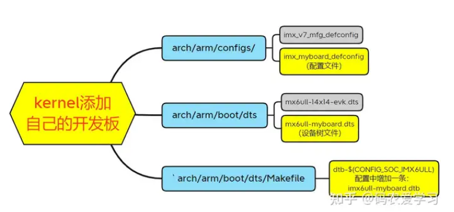

04 内核移植及分析
内核移植及分析
去哪下载源码
移植Linux内核也分为2种境界：
- 1.芯片原厂为自己的demo板修改Linux内核的官方源码；
- 2.自制开发板时，为自己的板子修改原厂demo板或者别的参考开发板的Linux内核源码
我们如果不是在芯片原厂上班，那么就不需要去Linux内核官方仓库下载源码，直接找到自己使用的芯片厂商所提供的Linux内核就行了，后续我们的移植都是对其demo板子的Linux内核源码的修改
移植流程
Linux内核的移植不像uboot的移植一样需要改很多源码，直接把原厂的Linux内核编译了操作系统就能直接跑了。但是此时大多数硬件设备是没法用的，因为自己的开发板的硬件原理图和原厂的demo板的不同，所以自己一般要针对板子修改设备树，编写驱动，这也是驱动开发工程师做的工作，也就是说驱动开发本质上就是Linux内核开发！
移植通常包括以下步骤：

1.在arch/arm/configs目录下添加自己的开发板的配置文件imx_myboard_defconfig
2.在arch/arm/boot/dts目录下添加自己开发板的设备树文件imx6ull-myboard.dts
3.修改设备树的Makefilearch/arm/boot/dts/Makefile，加入自己的设备树文件
具体流程参考：
i.MX6ULL嵌入式Linux开发3-Kernel移植 - 知乎 (zhihu.com)
内核启动流程
1.硬件初始化(体系结构相关)
- 执行主体：
arch/arm64/kernel/head.S中的stext，它是由内核链接脚本指定的内核入口，是一段汇编代码 - 功能：
- 保存启动参数：解析Bootloader（如U-Boot）传递的参数（如设备树地址、命令行参数
cmdline） - 底层硬件初始化：
- 关闭中断，设置CPU为安全状态（如ARM的SVC模式）
- 初始化MMU（设置页表、启用虚拟内存）
- 配置缓存和TLB（部分架构）
- 设备树处理：对设备树进行初步验证（解析魔数，解析根节点并保存），初步解析内存布局和关键外设（如串口用于早期打印）
- 跳转到C环境：最终调用
start_kernel()（位于init/main.c），进入通用初始化阶段
- 保存启动参数：解析Bootloader（如U-Boot）传递的参数（如设备树地址、命令行参数
2.通用内核初始化
- 执行主体：
init/main.c中的start_kernel()函数，里面一共调用了数十个函数进行初始化 - 功能：
- 初始化关键子系统：
- 内存管理（
mm_init()）：建立物理内存映射，初始化伙伴系统 - 调度器（
sched_init()）：初始化进程调度（如CFS） - 中断/异常（
trap_init()、irq_init()）：设置中断向量表（如ARM的vector_swi） - 定时器（
time_init()）：初始化系统时钟（如ARM的PIT或HPET）
- 内存管理（
- 驱动模型与设备树：
driver_init()：初始化设备模型（sysfs、devtmpfs）- 扫描设备树节点，匹配并加载驱动（如串口驱动用于控制台输出）
- 用户空间启动：
rest_init()：创建内核线程kernel_init（PID 1），最终执行用户空间的init程序。由init程序完成余下的引导过程，比如加载运行级别，加载服务，引导 Shell/图形化界面等等- 若使用
initramfs，会先解压并挂载为临时根文件系统
- 初始化关键子系统：
精简回答
嵌入式Linux内核启动分为两部分：
- 汇编阶段（
head.S）：初始化CPU/MMU，解析设备树，跳转到start_kernel() - C语言阶段（
start_kernel()）：初始化内存、调度、中断等核心子系统，加载驱动，最后通过rest_init()启动用户空间的init进程
All articles on this blog are licensed under CC BY-NC-SA 4.0 unless otherwise stated.